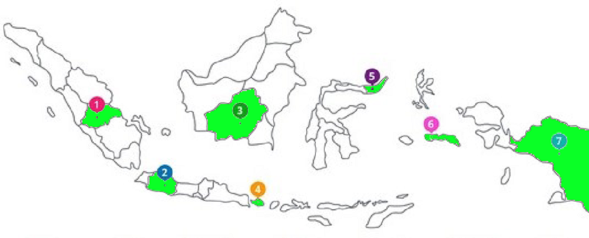

|
Pada tahun 2000, PT. Rotiku Nusantara didirikan sebagai sebuah perusahaan Penanaman Modal Asing di Jawa Barat. Produksi pertama diluncurkan dengan merk RotiKu dengan produk roti tawar. |
1
|
|
2
|
Mulai tahun 2005 - 2010, PT. RotiKu Nusantara secara perlahan melakukan berbagai inovasi produk roti yang awalnya hanya memproduksi roti tawar, kini mulai memproduksi roti isi dan kue dengan berbagai macam rasa. |
|
Tahun 2011 - 2018, PT. RotiKu Nusantara secara perlahan memperluas wilayah produksi dengan pembukaan cabang kedua di Bali dan terus belanjut hingga ke Papua. |
3
|
|
4
|
Hingga saat ini PT. RotiKu terus mencoba memperluas wilayah produksi dan terus mencoba mengembangkan varian roti baru yang lebih menarik dan penuh rasa. |
Visi dan Misi Perusahaan |
|
VisiMenghasilkan aneka ragam roti yang disukai banyak masyarakat dan dengan harga yang terjangkau |
MisiMendistribusikan produk RotiKu ke seluruh masyarakat Indonesia secara merata dan terjangkau |

Sebagai produsen roti di Indonesia, kami memiliki beberapa cabang produksi. PT. RotiKu Nusantara telah mendirikan pabrik di Jambi, Jawa Barat, Kalimantan Tengah, Bali, Sulawesi Utara, Maluku dan Papua. Untuk terus mendukung distribusi roti di Indonesia, kami akan berusaha memperluas jangkauan produksi dan sebisa mungkin menstabilkan harga di seluruh daerah, agar produk kami dapat menjangkau seluruh lapisan masyarakat.
| Tentang RotiKu Produk Kami Hubungi Kami Hubungan Investasi | Facebook Instagram Twitter |
|
Copyright © 2021 RotiKu all rights reversed. PT RotiKu Nusantara Tbk. |